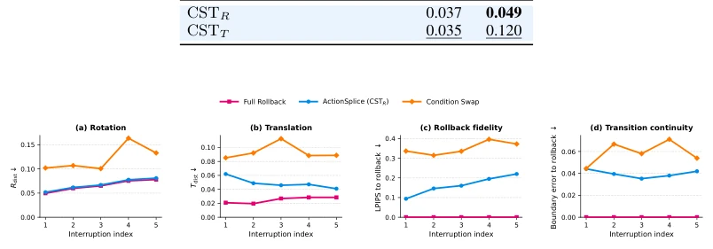
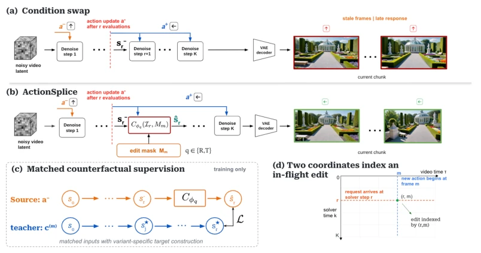
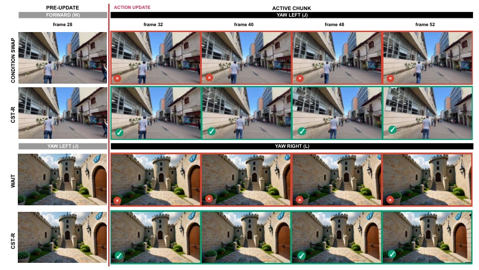
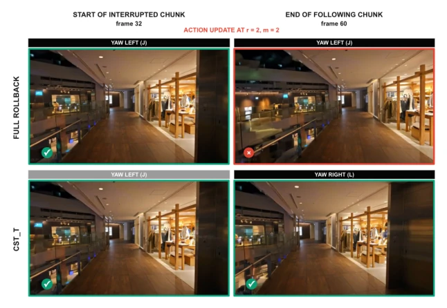
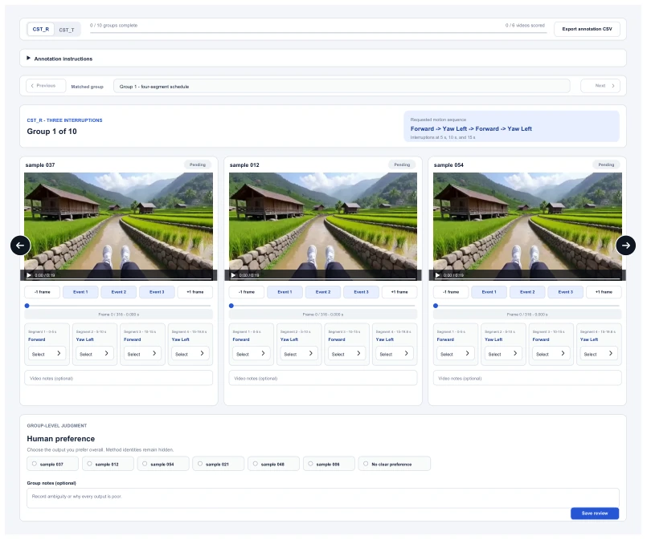

这篇论文给那些“想改就改”的交互式世界模型泼了一盆冷水，然后递上了一把名为ActionSplice的“手术刀”。核心痛点很真实：当你在生成视频时突然想改操作，现有方法要么傻等（Waiting），要么直接硬切导致画面崩坏（Condition Swapping），要么重头再来（Rollback）浪费算力。作者提出的Counterfactual State Transport (CST) 思路很妙，相当于在生成中途强行把模型“拽”到它本该去的地方，而不是让它继续按旧剧本演。不过，这招虽然快，但本质上还是靠“作弊”——用全量回滚（Full Rollback）生成的数据来训练修正器，推理时虽然省了计算，但训练成本其实不低。而且，这种“打补丁”的方式在多次连续打断后，误差会不会像滚雪球一样崩盘？论文里的多次打断实验虽然看着还行，但长期稳定性仍需观察。总的来说，这是一次在“速度”和“一致性”之间走钢丝的精彩尝试，但别指望它能解决所有控制延迟问题。
This paper pours cold water on those "edit-on-demand" interactive world models, then hands over a "scalpel" named ActionSplice. The core pain point is very real: when you suddenly want to change the operation while generating video, existing methods either wait foolishly (Waiting), directly hard-cut causing visual collapse (Condition Swapping), or start over (Rollback) wasting compute. The Counterfactual State Transport (CST) idea proposed by the authors is clever, equivalent to forcibly "dragging" the model to where it should go midway through generation, rather than letting it continue acting according to the old script. However, although this trick is fast, it essentially relies on "cheating" — using data generated by Full Rollback to train the corrector; while inference saves computation, the training cost is actually not low. Moreover, will this "patching" method collapse like a snowball after multiple continuous interruptions? Although the multiple interruption experiments in the paper look okay, long-term stability still needs observation. Overall, this is a thrilling tightrope walk attempt between "speed" and "consistency", but do not expect it to solve all control latency problems.
研究动机Motivation
交互式视频世界模型（Interactive Video World Models）正追求低延迟和高响应性，但现有的Chunk-autoregressive架构存在严重的“控制滞后”问题。当采样过程中收到新动作指令时，模型面临两难：若等待下一个Chunk，控制延迟大；若直接替换条件（Condition Swapping），当前状态仍基于旧动作，导致画面逻辑冲突；若全量回滚（Full Rollback），则需重复计算已完成的步骤，效率极低。现有工作如Diffusion Forcing (Chen et al., 2024) 或各类缓存加速方法 (Liu et al., 2025; Lyu et al., 2025) 主要关注计算复用或条件切换，却未解决“当前解算状态与新旧动作不匹配”的核心矛盾。例如，直接条件切换会让模型在旧轨迹上强行应用新条件，产生伪影；而等待策略则牺牲了实时性。ActionSplice旨在解决这一状态错位问题，实现真正的“飞行中编辑”（In-Flight Editing），即在保留已完成计算的前提下，瞬间将状态修正至新动作应有的轨迹上，无需重算。
Interactive Video World Models are pursuing low latency and high responsiveness, but the existing Chunk-autoregressive architecture suffers from serious "control latency" issues. When receiving new action instructions during the sampling process, the model faces a dilemma: if waiting for the next Chunk, control latency is large; if directly replacing conditions (Condition Swapping), the current state is still based on old actions, causing visual logic conflicts; if Full Rollback, it requires recalculating completed steps, efficiency is extremely low. Existing works such as Diffusion Forcing (Chen et al., 2024) or various caching acceleration methods (Liu et al., 2025; Lyu et al., 2025) mainly focus on computation reuse or condition switching, but do not solve the core contradiction of "current solved state mismatching with new and old actions". For example, direct condition switching forces the model to apply new conditions on the old trajectory, producing artifacts; while the waiting strategy sacrifices real-time performance. ActionSplice aims to solve this state misalignment problem, achieving true "In-Flight Editing", i.e., instantly correcting the state to the trajectory the new action should have on the premise of retaining completed calculations, without recalculation.

Figure 3: Repeated in-flight updates on HY-WM1.5. A CSTR corrector trained on three-interruption trajectories is applied at five interruptions without further training. Curves show mean error over the evaluation prompts. Sequential Full Rollback provides the reference.
方法Method
ActionSplice的核心是Counterfactual State Transport (CST) 框架，其目标是在采样中途（第r步）将当前状态$s_r^-$（基于旧动作$a^-$）快速修正为若执行新动作$a^+$本应达到的状态$s_r^*$。整体流程分为训练和推理两阶段。训练阶段利用“匹配回滚”（Matched Rollback）构建监督数据：对于每个中断点，生成一条基于新动作$a^+$的全量回滚轨迹，提取第r步的状态作为目标$s_r^*$，与中断时的旧状态$s_r^-$配对。推理阶段，冻结世界模型和采样器，仅引入一个轻量级修正器（Corrector）。该修正器接收当前状态、新旧动作条件及时间掩码，预测一个残差向量，将其加到当前状态上，从而“运输”到新轨迹。框架包含两种变体：CSTR（Retargeting）将新动作应用于整个活跃Chunk，修正全部状态；CSTT（Temporal Splicing）则通过时间掩码$M_m$，仅修正时间边界$m$之后的Suffix部分，保留Prefix的旧动作状态。修正后的状态被重新注入求解器，继续完成剩余的$K-r$步计算。该方法的关键创新在于不假设共享潜在空间，而是针对不同Backbone（如minWM的clean prediction或HY-WM1.5的Euler状态）定义特定的传输空间，并通过硬掩码（Hard Mask）强制保证Prefix区域的不可变性。
The core of ActionSplice is the Counterfactual State Transport (CST) framework, whose goal is to quickly correct the current state $s_r^-$ (based on old action $a^-$) midway through sampling (step $r$) to the state $s_r^*$ that should have been reached if the new action $a^+$ were executed. The overall process is divided into two stages: training and inference. The training stage uses "Matched Rollback" to construct supervised data: for each interruption point, generate a full rollback trajectory based on new action $a^+$, extract the state at step $r$ as the target $s_r^*$, and pair it with the old state $s_r^-$ at interruption. In the inference stage, freeze the world model and sampler, only introduce a lightweight corrector (Corrector). This corrector receives the current state, new and old action conditions, and time mask, predicts a residual vector, adds it to the current state, thereby "transporting" to the new trajectory. The framework includes two variants: CSTR (Retargeting) applies the new action to the entire active Chunk, correcting all states; CSTT (Temporal Splicing) uses time mask $M_m$ to only correct the Suffix part after time boundary $m$, retaining the Prefix's old action state. The corrected state is re-injected into the solver to continue completing the remaining $K-r$ steps of calculation. The key innovation of this method lies in not assuming a shared latent space, but defining specific transport spaces for different Backbones (such as minWM's clean prediction or HY-WM1.5's Euler state), and enforcing the immutability of the Prefix area through Hard Mask.

Figure 1: ActionSplice overview. (a) Direct condition swapping applies the revised action a+ only to the remaining evaluations, leaving the interrupted state s− r on the trajectory induced by a−. (b) At receipt step r, the corrector Cϕq transports s− r to bsr, after which the frozen sampler executes the remaining K −r steps. CSTR uses M0 = 1 to retarget the entire chunk. CSTT uses the suffix mask Mm to leave the prefix coordinates unchanged during transport. (c) Matched rollback provides the target s⋆ r at the same solver step. CSTR uses ordinary new-action rollback, while CSTT clamps the old-action prefix after each replayed evaluation. Rollback is used only for training and evaluation. (d) The receipt step r indexes solver time, while the boundary m indexes video time.
Experiments were conducted on two models: minWM-Wan Action2V and HY-WM1.5, comparing Waiting, Condition Swapping, Partial Rollback, Re-noising, and Full Rollback Oracle. Main metrics include LPIPS (fidelity), PSNR, SSIM, boundary error, and pixel-level latency. Results show that CSTR reduced Rollback-relative LPIPS by 61.5% on minWM and 75.9% on HY-WM1.5, and speed was 2.73 times and 1.69 times faster than waiting respectively. CSTT reduced LPIPS in the Suffix part by 56.1% and 77.5% respectively, while maintaining Prefix integrity. In the HY-WorldPlay benchmark test, CSTR achieved 25.66 PSNR and 0.1337 LPIPS, outperforming existing best results. Ablation studies show that removing the hard mask leads to Prefix retention failure, while using Unmatched Supervision leads to a significant drop in all metrics, verifying the importance of matched rollback data. Multiple interruption experiments show that CSTR did not significantly accumulate error under 5 consecutive interruptions, proving the robustness of the method.

Figure 4: Qualitative whole-chunk action updates. The top pair shows HY-WM1.5 changing from forward to yaw left. Condition swapping retains stale forward motion, while CSTR responds within the active chunk. The bottom pair shows minWM changing from yaw left to yaw right. Waiting defers the request, while CSTR responds in the active chunk. Red and green borders mark stale and responsive frames.

Figure 5: Qualitative within-chunk transition on HY-WM1.5. The update arrives at r = 2 and re- quests yaw right from m = 2. The Full Rollback row follows the original yaw-left action throughout the chunk, while CSTT preserves the yaw-left prefix and applies yaw right to the suffix. Both roll- outs continue through the following chunk to make the trajectory difference visible. The yaw-right target is outside the corrector’s training action set and is shown only as a qualitative generalization example.

Figure 6: Blinded interface for action-following and stale-frame annotation. Annotators inspect anonymized videos for a matched prompt and action schedule, score each action segment, and record a group-level preference. Method identities remain hidden.